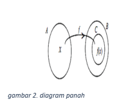

Terlihat pada gambar diatas pemandangan kios minuman jus buah-buahan segar. Di keranjang kios tersebut terdapat buah-buahan segar sebagai domain (input) yang akan dijadikan jus melalui blender (sebagai fungsi) sehingga akan menghasilkan jus sebagai range (daerah hasil). Jika yang akan di jus adalah dua buah maka kita telah melakukan komposisi fungsi. Fenomena ini yang akan kita pelajari dalam materi ini.
A. Fungsi dan Nilai Fungsi
- Suatu fungsi dari A ke B (dimana A dan B bukan merupakan huimpunan kosong) adalah aturan yang memasangkan setiap anggota A dengan tepat satu anggota B
- Himpunan A disebut domain atau daerah asal
- Himpunan B disebut kodomain atau daerah kawan
- Himpunan semua peta di B disebut range
1. Cara Menyatakan Diagram Fungsi
Fungsi f = A -> B dapat dinyatakan dalam tiga bentuk, yaitu:
a. Diagram Panah
Contoh:
Gambarlah dengan diagram panah fungsi f : x -> y dengan domain A = ( 1,2,3,4 ) dan kodomain B = ( 1,2,3,4,5,6,7,8 )
b. Himpunan Pasangan Berurut
Fungsi sebagai pasangan berurut dari dua bilangan real x dan y adalah himpunan (x,y) dengan x ∈ D f paling banyak muncul satu kali dalam setiap pemetaan dan x harus mempunyai pasangan kodomain (K f)
Contoh:
Diketahui f(x) = 1 – 3x dengan daerah asal adalah { 1,2,3,4 }. Himpunan pasangan berurutannya adalah {( 1, -2 ), (2, -5 ), ( 3, -8 ), ( 4, -11 )}
c. c. Grafik fungsi
Grafik fungsi f (x) pada diagram kartesius terbentuk dari titik (x,y) dengan x ∈ D f dan y = f (x) ∈ R f
2. Nilai Fungsi
Jika f menyatakan fungsi pada x suatu masukan untuk fungsi f maka nilai outputnya ditulis f (x) yang berarti f dan x.
Contoh:
f(x) = 7x – 4
tentukanlah nilai fungsi untuk x = 2
Jawab:
f(x) = 7x – 4
f(2) = 7.2 – 4
f(2) = 14 – 4
f(2) = 10
jadi f(2) adalah 10.